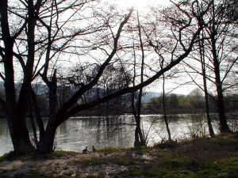
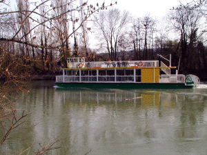
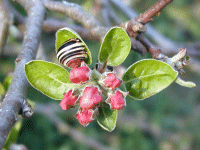
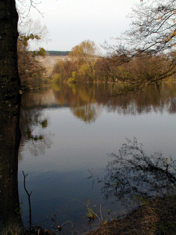
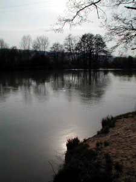
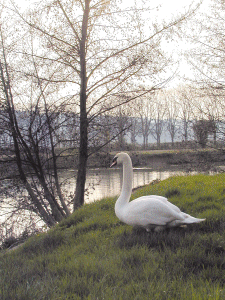

|

Les bords de la Marne accessibles depuis Damery.
Un chemin de halage nous permet de commencer
doucement !
Des cols verts hésitent à se jeter
à l'eau : il y a du courant !
|

Un bateau à aubes ? non non ! une
hélice se cache sous la roue !
Belle promenade pour touristes !
|
|

Une fleur de pommier en mars ???
(pas
d'agrandissement)
|

Reflets dans un étang près de la
Marne.
|
|

Contre-jour. En fin de crue la Marne est encore
impressionnante.
|

Tous les oiseaux attirés par l'eau vivent
au bord de la Marne, ce cygne est imposant ! non ?
|